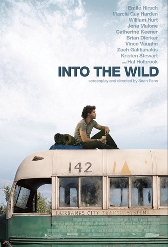
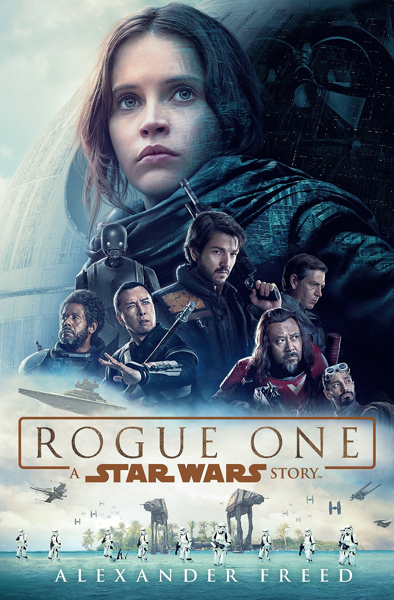
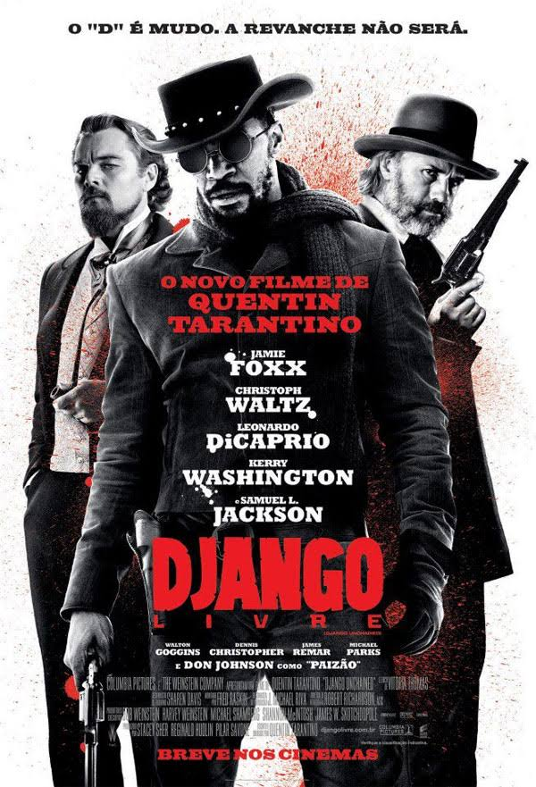

FILMES
Into the Wild

Into the Wild
Into the Wild (bra: Na Natureza Selvagem; prt: O Lado Selvagem) é um filme estadunidense de 2007, do gênero aventura dramático-biográfica, escrito e dirigido por Sean Penn, com roteiro baseado no livro homônimo de Jon Krakauer.
Conta a história real das viagens de Christopher McCandless através da América do Norte e sua vida passada no deserto do Alasca no início da década de 1990. O filme é estrelado por Emile Hirsch, como McCandless, e Marcia Gay Harden e William Hurt como seus pais, além de Catherine Keener, Vince Vaughn, Kristen Stewart e Hal Holbrook.
8.1/10
89%
Rogue One

Rogue One: Uma História Star Wars
Em Rogue One: Uma História Star Wars, Jyn Erso (Felicity Jones) foi afastada de seu pai, Galen (Mads Mikkelsen), ainda criança, devido à exigência do diretor Krennic (Ben Mendelsohn) que ele trabalhasse na construção da arma mais poderosa do Império, a Estrela da Morte. Criada por Saw Gerrera (Forest Whitaker), ela teve que aprender a sobreviver por conta própria ao completar 16 anos. Já adulta, Jyn é resgatada da prisão pela Aliança Rebelde, que deseja ter acesso a uma mensagem enviada por seu pai a Gerrera. Com a promessa de liberdade ao término da missão, ela aceita trabalhar ao lado do capitão Cassian Andor (Diego Luna) e do robô K-2SO.
7.8/10
87%
Akira
Akira
Uma enorme explosão fez com que Tóquio fosse destruída em 1988. Em seu lugar foi construída Neo Tóquio, que, em 2019, sofre com atentados terroristas por toda a cidade. Os amigos Kaneda e Tetsuo integram uma gangue de motoqueiros. Eles disputam rachas violentos com uma gangue rival, os Palhaços, até que um dia Tetsuo encontra Takashi, uma estranha criança com poderes que fugiu do hospital onde era mantido como cobaia.
8/10
90%
O Silêncio dos Inocentes
O Silêncio dos Inocentes
Uma jovem e talentosa agente do FBI é aconselhada pelo Dr. Hannibal Lecter, um psiquiatra brilhante e também um psicopata violento e canibal, a fim de conseguir capturar outro assassino.
8.6/10
95%
Django Livre

Django Livre
Com a ajuda de um caçador de recompensas alemão, um escravo libertado sai para resgatar sua esposa de um brutal dono de uma plantação no Mississipi.
8.4/10
92%
Inicio